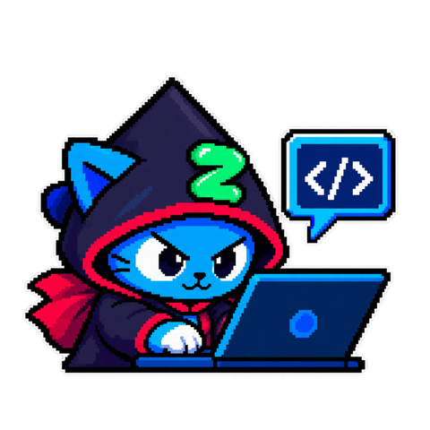

Hệ thống bật lên một cảnh báo. Ngày thường, cảnh báo ấy được xử lý trong vài phút. Hôm nay, nó nằm im đến sáng, vì người trực duy nhất đang ngủ, và người có thể gọi thêm thì đang ở quê.
Kẻ tấn công biết chuyện này. Chúng không chọn ngày một cách ngẫu nhiên.
Khi Starter nghỉ lễ, đội ngũ trực mỏng đi
Kỳ nghỉ dài khiến số người trực giảm hẳn, và điều đó đồng nghĩa với việc sự cố được phát hiện muộn hơn, khắc phục chậm hơn. Cơ quan an ninh mạng CISA và FBI của Mỹ đã nhiều lần cảnh báo rằng các nhóm ransomware, loại mã độc khoá dữ liệu để đòi tiền chuộc, chủ động chọn dịp lễ và cuối tuần để ra tay, đúng lúc khả năng phản ứng của tổ chức yếu nhất.
Một khảo sát năm 2025 với các tổ chức tại 10 quốc gia vẽ nên bức tranh rất rõ.
Khi được hỏi vì sao, phần lớn nói để cân bằng công việc và cuộc sống, một số vì doanh nghiệp đóng cửa, và gần một phần ba tin rằng mình sẽ không bị tấn công.
Nói cách khác, kẻ gian tăng ca đúng vào lúc hầu hết chúng ta nghĩ rằng không cần ai trực.
CISA và FBI, cảnh báo chung “Ransomware Awareness for Holidays and Weekends”; Semperis, “2025 Ransomware Holiday Risk Report”, 24/11/2025.
Khi Starter mải chờ hàng, cảnh giác cũng lơi đi
Lý do thứ hai không nằm ở hệ thống, mà nằm ở chính chúng ta. Mùa lễ là lúc Starter vừa chờ hàng, vừa đặt vé, vừa săn sale. Mỗi việc ấy kéo theo một loạt tin nhắn thật, và giữa những tin nhắn thật, một tin nhắn giả trông chẳng khác gì.
Đơn hàng GN8842193 của anh/chị đang tạm giữ do thiếu phụ phí 15.000đ. Vui lòng hoàn tất trong 24h. gnthanhtoan.top/x7k
Mười lăm nghìn đồng. Một con số nhỏ đến mức không đáng để nghi ngờ, gửi đến đúng lúc Starter đang mong một kiện hàng. Tin nhắn này cho thấy một điều quan trọng về lừa đảo thời nay, Phần 3 sẽ nói rõ.
Khi ranh giới giữa công việc và đời sống mờ đi
Lý do thứ ba âm thầm hơn. Nhiều người mua sắm cá nhân trên laptop công ty, rồi lại mở email công việc trên điện thoại riêng. Hai thế giới dùng chung thiết bị, dùng chung thói quen, và đôi khi dùng chung cả mật khẩu. Kẻ tấn công chỉ cần một phía sơ hở là bước vào được cả hai.
Và tại Việt Nam, chúng đã thu về 6.000 tỷ đồng
Ba lý do trên không phải chuyện ở đâu xa. Trong 11 tháng đầu năm 2025, lừa đảo trực tuyến gây thiệt hại 6.000 tỷ đồng, theo khảo sát của Hiệp hội An ninh mạng quốc gia (NCA) và Bộ Công an. Riêng trên thiết bị di động, năm 2025 ghi nhận 62.952 loại mã độc mới, trong đó 931 loại giả dạng những ứng dụng quen thuộc.
Có một tin tốt: tỉ lệ người dùng trở thành nạn nhân đã giảm, lần đầu tiên sau nhiều năm. Nhưng tin tốt ấy đi kèm một dấu hỏi, vì chỉ 32,12% nạn nhân trình báo cơ quan chức năng. Con số thực tế chắc chắn cao hơn những gì được ghi nhận.
Cũng theo khảo sát này, năm hình thức lừa đảo phổ biến nhất năm 2025 lần lượt là:
- Mạo danh công an, cơ quan nhà nước
- Thông báo trúng thưởng, nhận quà tặng TĂNG MẠNH MÙA LỄ
- Mời gọi đầu tư lợi nhuận cao
- Giả danh shipper, nhân viên giao hàng TĂNG MẠNH MÙA LỄ
- Kết bạn, làm quen rồi dẫn dụ
Trúng thưởng và giả danh shipper xuất hiện quanh năm nhưng tăng vọt vào mùa mua sắm cuối năm. NCA chỉ công bố thứ hạng, chưa công bố tỉ lệ từng hình thức.
NCA và Bộ Công an, Báo cáo nghiên cứu, khảo sát an ninh mạng 2025, khu vực người dùng cá nhân, 07/01/2026, nca.org.vn.

Mình nghỉ lễ, nhưng việc bảo vệ tài khoản thì không nghỉ. Và việc ấy bắt đầu từ trước khi Starter rời văn phòng.

Ba việc cần làm ở công ty trước khi nghỉ lễ